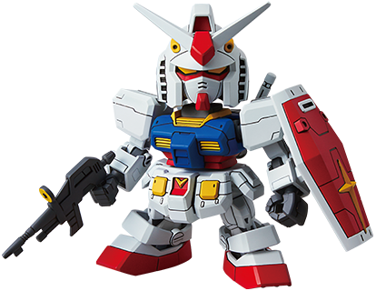
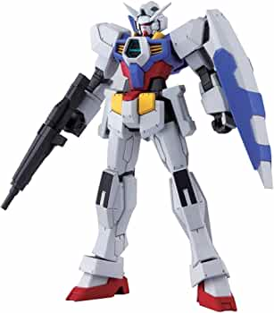
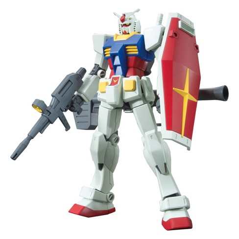
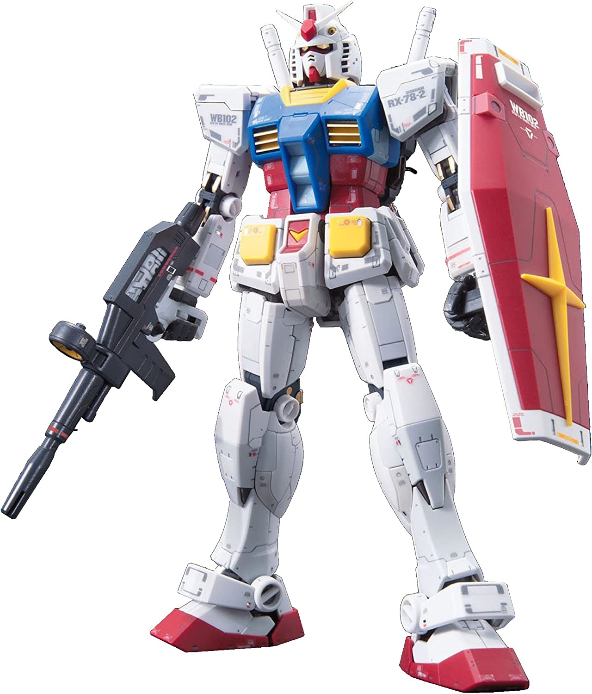
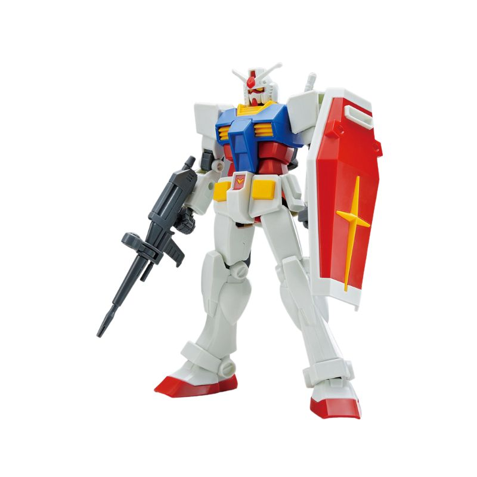
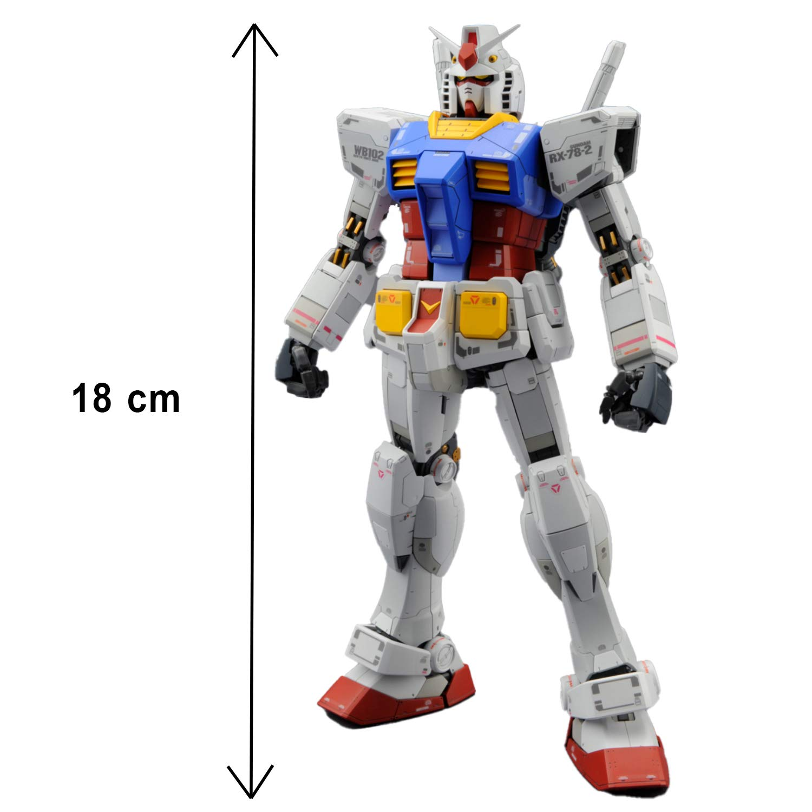
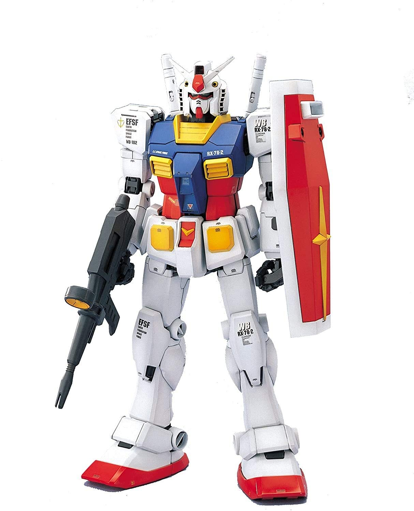
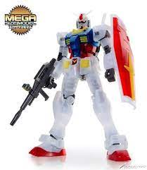

GUNPLA IS GUNDAM PLASTIC MODEL KITS
If you want to divide both types and sizes of Gunpla. Can be divided into many, therefore, we would like to explain according to the size and the main types that are popular as follows :
1. SUPER DEFORMED (SD) Let's start with the first size, that is, SD is considered the cheapest grade. It is smaller than 1/144, which is unique. Proportion that can be called big head, small body, looks cute, cute, fluffy, easy to assemble, suitable for children. But the disadvantage is Less detail and minimal color separation.
Height about 8 cm
2. HIGH GRADE (HG) 1/144 The actual size to model ratio, for example, the anime Gundam is 18 meters tall (most are 16 – 20 meters tall), 1/144 scale models are 12.5 cm tall.
Height about 12.5 cm
This type is only done outside the main universe series.
3. High Grade Universal Century (HGUC) 1/144 refers to high-grade gunpla that appeared in the UC (Universal Century) era as well as the first Gundam-0079, Z, ZZ, etc. HGUC is a development of old gunpla. Including the development of a new Gunpla Made into a series in the form of 1/144, HGUC is probably the best HG 1/144 to date. both realistic proportions More color separation than the old Gunpla. Including moving points, poses, it is a series that has won the hearts of 1/144 scale Gunpla collectors.
Height about 12.5 cm
This type is only done the main universe Universal Century of Gundam series.
4. REAL Grade (RG) 1/144 The real grade is a new grade added to the 30th anniversary project, the first real grade RX-78-2 Gundam. which combines many advantages that are superior to other grades, such as
- The size is not very big and the price is not too high, high grade
- Master Grade Gunpla Inner Frame
- Perfect grades of many parts.
The RG is a 1/144 scale, just like a HG. But there are more details than HG, and the price is not too high. Arranged as worthwhile, Should be bought and kept.
Height about 12.5 cm
5. The ENTRY GRADE 1/144 (EG) is a beginner-friendly GUNPLA model that is both easy to assemble and high quality, developed over 40 years of technology. Beginning with GUNPLA, those who have been around for a while, and big fans, to provide a new assembly experience. This model adopts Touch-Gate assembly that can be disassembled without cutting tools, and individual parts are grouped together for easy assembly. And there's no need to paint or put stickers on. The combination of technologies provides excellent joint movement with fewer parts.
price low cost, easy to assemble and has a wide range of joints that can be moved. But the details are not comparable HG.
Height about 12.5 cm
6. Master Grade (MG) 1/100 It's a grade that can be called very popular. because it's quite realistic It also makes the movement realistic as well. Plastic casing, beautiful color like the real one The finger moves more than the proportions that other grades are talking about. It's also incomparable. Plus, MG also makes Gundam out of every sector as well. Therefore, it is popular among gunpla collectors.
Height about 18 cm
7. PERFECT GRADE (PG) 1/60 Perfect Grade, just the name itself says perfection, with proportions, color separation, and moving points that can move close to humans. very perfect Beauty and mechanical details That can be called realistic Inner Frame or inner frame is better than MG , has high strength. The disadvantage is that there are only a few models produced, just like 1/60 and the price is quite high.
Height about 30 cm
8.Mega size 1/48 As the name suggests, Mega size is the largest Gunpla. The size is 1/60 or about 37.5 cm. Although this model is larger than PG, but the assembly is not as complicated. On the contrary, this grade is similar to HG. There are fewer parts, so simple that it does not require model cutters. This makes it the recommended model for beginners who want a big size to decorate their display cabinet at home.
Height about 37.5 cm
It's originally owned the right to sell together with Sunrise. The price is quite high but the quality of everything is very good. Good plastic texture, tight assembly work. Continue to have fun, not hurt your hands, with realistic details. Definitely worth the money paid.
It's a Chinese work that every pattern is designed like Bandai. The quality is so-so and the price is quite reasonable. Plastic is not so good but it's acceptable The joints may not be as good as Bandai, but if you buy them for display, they're worth it. admit that it's worth it.
The best quality in Chinese models. The price is not very strong and because some Bandai Gunpla are still not very well produced. For this reason, Gunpla collectors may be interested in playing at a lower price. This brand is very popular among budget-minded groups.
***when you know 3 brands It's up to you to decide which brand you want to buy will be the best value for you.***
If you are interested, you can buy through the channel :
VCA SHOP : GO TO BUYOr can be purchased through leading department stores
Have you fun assembling PLASTIC MODEL KITS!!!